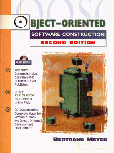
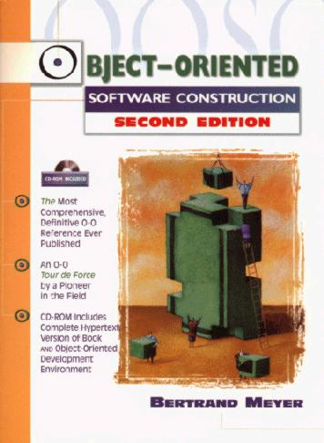

|

"Epoch-making"
Journal of O-O Programing
"Destined to become the comprehensive and definitive
reference" Software Development
"The ultimate O-O guide" Unix Review
"Arguably the best work on the subject" John
Dvorak in PC Week
"Read this book and you'll immediately be a better
programmer" David Wall at Amazon.com
"If you program computers, you need to read this book"
Official Amazon.com review
"A magic, magnificent and indispensable book" Preface
to Spanish edition
Winner of the
award, the industry's
top prize for best software development book.
Object-Oriented Software Construction, Second Edition
BERTRAND MEYER
ISE Inc., Santa Barbara
Prentice Hall Professional Technical Reference.
Published 1997.
Available from all good technical
bookstores (and from ISE, see below). |
|
1254 + xxviii pp.
Soft cover
ISBN 0-13-629155-4
If you have trouble finding the book, or your bookstore does
not carry it, please drop us a
note with the name of the bookstore.
You can also order the book from ISE and even request it to be autographed.
Price including postage and handling:
$79.95 (USA), $99.95 (outside USA, air mail), $129.95
(outside USA, UPS).
Order here.

OVERVIEW
Object-Oriented Software
Construction, second edition is the comprehensive
reference on all aspects of object technology, from design
principles to O-O techniques, Design by Contract, O-O analysis,
concurrency, persistence, abstract data types and many more.
Written by a pioneer in the field, contains an in-depth analysis
of both methodological and technical issues.
Two-color printing
provides for clear figures and readable software extracts.
Comes with a CD-ROM containing: the complete hyperlinked
text, for easy reference; software to read the text on major
industry platforms; supplementary material (reusable components,
mathematical complements); and a complete graphical O-O
development environment supporting the concepts of the book.
CONTENTS
- Contents
- Preface
- Foreword to the second edition
- About the accompanying CD-ROM
- Part A: The issues
- 1: Software quality
- 2: Criteria of object orientation
- Part B: The road to object
orientation
- 3: Modularity
- 4: Approaches to reusability
- 5: Towards object technology
- 6: Abstract data types
- Part C: Object-oriented
techniques
- 7: The static structure: classes
- 8: The run-time structure: objects
- 9: Memory management
- 10: Genericity
- 11: Design by Contract: Building reliable
software
- 12: When the contract is broken: exception
handling
- 13: Supporting mechanisms
- 14: Introduction to inheritance
- 15: Multiple inheritance
- 16: Inheritance techniques
- 17: Typing
- 18: Global objects and constants
- Part D: Object-oriented
methodology: applying the method well
- 19: On methodology
- 20: Design pattern: multi-panel
interactive systems
- 21: Inheritance case study:
"undo" in an interactive system
- 22: How to find the classes
- 23: Principles of class design
- 24: Using inheritance well
- 25: Useful techniques
- 26: A sense of style
- 27: Object-oriented analysis
- 28: The software construction process
- 29: Teaching the method
- Part E: Advanced topics
- 30: Concurrency, distribution,
client-server and the Internet
- 31: Object persistence and databases
- 32: Some O-O techniques for graphical
interactive applications
- Part F: Applying the
method in various languages and environments
- 33: O-O programming and Ada
- 34: Emulating object technology in non-O-O
environments
- 35: Simula to Java and beyond: major O-O
languages and environments
- Part G: Doing it right
- 36: An object-oriented environment
- Epilogue
- Part H: Appendices
- Appendix A: Extracts from the Base
libraries
- Appendix B: Genericity versus inheritance
- Appendix C: Principles, rules, precepts
and definitions
- Appendix D: A glossary of object
technology
- Appendix E: Bibliography
Index
Reviews
Unanimous critical praise:
Roger Smith in Software Development:
Object-Oriented Software
Construction, second edition will be appreciated by the
developer community even more than the first edition, if that
is possible. In my unbiased opinion [...] it is destined to
become the comprehensive and definitive reference for most
methodological and technical questions raised by object
technology. Its width and breadth of scope is impressive, from
object-oriented techniques like Design by Contract and
inheritance, to methodology issues like patterns and class
design, to advanced issues like concurrency and persistence.
Charles Ashbacher in Journal of Object-Oriented
Programming (JOOP):
Rigorous in approach, packed with
quality, complete in coverage and occasionally humorous, this
book is on my permanent reference shelf and will no doubt look
bad after a while. But only the physical aspects such as
covers and spine will be worn out. The ideas will live
forever, at least in the context of the computer world.
Craig Patchett, from an on-line review at amazon.com:
A definitive guide to object
oriented programming and design. Meyer has not only managed to
create a book that covers virtually every aspect of the field;
he has done so in a way that is very readable and that puts
everything into context in addition to going into specific
details. Highly recommended.
Ian Graham in JOOP:
Sanjiv Gossain in JOOP:
One of my favorite books on the
subject of objects has been revised and updated. [...]
Bertrand Meyer has done an excellent job of incorporating a
multitude of new topics into the original work, and yet
retaining the authoritative, informative style of the text. As
one reads the book, one soon realizes that this is an author
who believes in what he is writing. The ideas come through
wonderfully.
Stan Kelly-Bootle in Unix Review:
David Wall at Amazon.com:
If you buy only one
object-oriented programming book, it should be Object-Oriented
Software Construction. One of best computer books ever
written, this book walks you through the author's outstanding
solutions to programming problems. Read this book and you'll
immediately be a better programmer. That may seem like a
strong statement, but this book deserves every accolade.
Official Amazon.com review:
The developer of the acclaimed
Eiffel programming language comes through with one of the
clearest and most informative books about computers ever
committed to paper. Object-Oriented Software Construction
is the gospel of object-oriented technology and it deserves to
be spread everywhere. [...]
If you program computers, you need to read this book.
Luis Joyanes Aguilar in his Preface to the Spanish
edition:
The excellent and immense work of
Bertrand Meyer ... will be the obligatory reference on
object-oriented software in the years before and during the
third millenium...
OOSC-2 is not just a magnificent, magic and
indispensable book to learn how to build O-O software: it
will enable its reader to reach excellence in the world of
software.
From the reviews of the first edition
Ron Levine in Software (IEEE):
Tour de Force... Meyer
succeeds admirably in leading the patient reader ... through a
presentation of the fundamental software development issues
that is independent of any programming system, language or
application area... Well organized and highly readable...
Meyer's high standards for precision of expression do not
interfere with a literate style or preclude the occasional
injection of humor.
Bill Watts in .EXE (London):
Meyer writes like an angel.
Pierre America in Science of Computer Programming:
The book presents the concepts in
an orderly manner and explains them very well. It is even more
attractive because it presents a technique of object-oriented design.
Walter Zintz in Unix World:
The author believes in OOP, has
the experience to know that it works, and is willing and able
to show us why and how... The clear choice for software people
who want to dive straight into object-oriented programming.
|